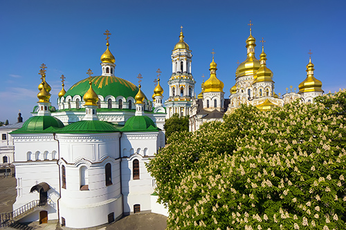
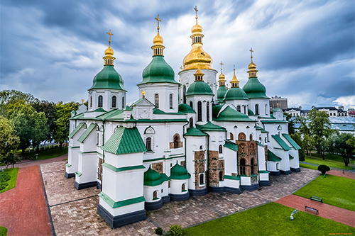
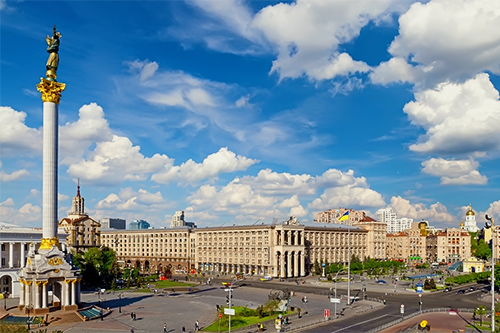
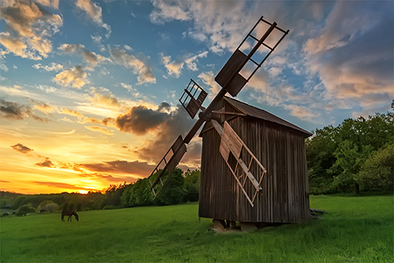

Київ - столиця України

Цікаві факти про Київ
-
Каштан
Неофіційний символ міста Київ. Багато туристів люблять відвідувати Київ у травні, коли квітнуть каштани.
-
Київ – одне з найдавніших міст Східної Європи,
який зіграв важливу роль в розвитку середньовічної східнослов’янської цивілізації.
Досі невідома точна дата заснування Києва, проте у 1982 році місто відзначило своє 1500-річчя.
-
Київ входить в топ-10 найбільших міст Європи
-
Києво-Печерська лавра
Національний історико-культурний заповідник Києво-Печерська лавра відвідує понад 1 млн туристів щороку.
-
Монумент «Батьківщина-мати»
розташований на території Національного меморіального комплексу «Музей Великої Вітчизняної Війни», входить до п'ятірки найвищих скульптур світу. Її висота становить 102 м.
Історичні місця Київа
-

Києво-Печерська лавра
Києво-Печерська лавра заснована у XI ст. Розташована на схилах Дніпра, вона є одним із найбільш впізнаваних символів столиці України. Сюди приїздять тисячі віруючих людей та паломників, також це улюблене місце для цікавих прогулянок, куди люблять завітати не лише гості Києва, але й його мешканці.
В лаврі розташована знаменита дзвіниця – одна з візитівок Києва, звідки відкривається чудова панорама на місто. На території комплексу площею 28 гектарів розміщено підземні печери із муміями монахів, багато музеїв, в тому числі музей мікромініатюр та музей «Золота скарбниця», де зберігається колекція Скіфського золота, а також безліч тематичних крамниць.
Києво-Печерська лавра заснована у XI ст. Розташована на схилах Дніпра, вона є одним із найбільш впізнаваних символів столиці України. Сюди приїздять тисячі віруючих людей та паломників, також це улюблене місце для цікавих прогулянок, куди люблять завітати не лише гості Києва, але й його мешканці.
В лаврі розташована знаменита дзвіниця – одна з візитівок Києва, звідки відкривається чудова панорама на місто. На території комплексу площею 28 гектарів розміщено підземні печери із муміями монахів, багато музеїв, в тому числі музей мікромініатюр та музей «Золота скарбниця», де зберігається колекція Скіфського золота, а також безліч тематичних крамниць.
-

Софійський собор
Софійський собор, заснований у 1037 році, – чудовий приклад мистецтва й архітектури часів Київської русі, що зберігся до наших днів. Тут відбувалися коронації князів, а зараз знаходяться їх усипальні, тут пройшла численна кількість офіційних та релігійних церемоній.
За правління князя Ярослава Мудрого в соборі було влаштовано першу бібліотеку на Русі, а також першу школу для хлопчиків та дівчат. Цікаво те, що внутрішнє оздоблення собору майже не змінилося з часів його заснування. Фрески, що прикрашають стіни Софійського собору, виконані в унікальній техніці, розповідають глядачам історію біблейських сюжетів, життя апостолів та зображують портрети воїнів та настоятелів церкви.
-

Майдан Незалежності
Майдан Незалежності має досить невеликі розміри, проте це – одна із найбільш жвавих точок міста. Він поєднує три головних вулиці Києва – Хрещатик, Інститутську та Героїв Небесної Сотні. Жодна значна подія не відбувається без участі Майдану Незалежності. Тут регулярно монтується сцена для проведення культурно-розважальних заходів, тут зустрічаються для прогулянок друзі, а також саме Майдан став свідком революційних подій в Україні.
В 2001 році Майдан зазнав капітального ремонту та здобув вже звичний для жителів та туристів вигля
-

Музей народної архітектури та побуту Пирогово
На околиці селища Пирогово знаходиться унікальний Національний музей під відкритим небом площею 150 га. Тут можна на власні очі побачити старовинні будинки, дерев‘яні церкви, млини, одяг, речі домашнього вжитку минулих століть.
Експонати, представлені в Пирогово, є справжніми, вони привезені з різних куточків країни, та завдяки їм можна відчути все розмаїття та унікальний колорит українських земель. Тут регулярно проводяться святкування, традиційні гуляння, також це улюблене місце для фотосесій молодят, сімейних подій та дружніх прогулянок.
Our Advantages
Explore the Modern Connected Risk Platform
Built to provide the efficiency, connectedness, and visibility you need to stay ahead of today’s dynamic risk environment.
-

Risk Management

The gradual accumulation of information about
-

Compliance Management
The gradual accumulation of information about
-

SOX Management
The gradual accumulation of information about
-

Internal Audit Streamlined
The gradual accumulation of information about